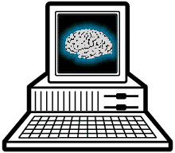

|

 We use our
brains constantly, without even realizing it. We use our
brains constantly, without even realizing it.
Try this exercise: close your left
eye. Notice that big thing obscuring the left side of your vision? Yes,
it's your nose!
Now, close just your right eye. You can see your nose on the right! No big
surprise there.
OK, now open both eyes -- where's the nose?! Sure, if you focus your vision
right in front of you can make it out, vaguely. But you never really
notice, as you are looking out on
the world, that your nose is right there in the middle of your field of
vision.
Where did
it go? What you see with both eyes is the combination of what you see with
each eye individually, isn't it? Yet the nose gets magically subtracted out
somewhere. Your brain
does that, automatically. It recognizes that the nose isn't anything
important (it's always going to be there, or at least, it's not a problem
until it ISN'T there), so it simply doesn't
process the nose into the visual image you are aware of.
This
process is repeated in countless other ways. Your eyes "see"
everything around you; all they do is receive light waves in a certain
frequency range. Your brain determines what is
significant enough to reach your level of conscious awareness. Why do you
notice things the second time you see a movie that you were unaware of the
first time? You "saw" exactly
the same movie! But you weren't focused on the same details, the first time,
so it was as if they never entered your field of vision.
|

|
In
Whirrled, computers will perform a similar filtering role. The amount of
information flowing through interconnected digital networks will continue to
grow. That sea of information, despite constant efforts to organize it, will
be far too vast, far too time-
consuming, for any individual to search through. We are used to thinking of
communications delivery systems as a means of bringing information to you:
magazines
come in the mail, your newspaper is delivered by a smiling teenager on a bike,
and television arrives over the airwaves. The function of technology is to
carry the information
from its source to your home, where you can dig through it.
With the
expansion
of global information networks, an infinite quantity of information will be
available to you. Transmitting any information source to your home will not
be a problem. The problem will
be deciding which information source to receive, and how to sort out the
material that arrives on your doorstep.
Up to now,
we have had the luxury of scarcity in receiving information. We don't have to
worry about all the information in all the libraries of the world because we
don't consider making
the effort to visit all of them. We limit our awareness to that sliver of
information that is
readily available to us: the contents of our local paper, the discussion on
our favorite TV
news show, the catalog of our local library. In Whirrled, we will be able to
access all the
major libraries on the planet just as easily as we can today access a daily
newspaper. But
with that enormous volume of information at our fingertips, the problem shifts
to one of
filtering.
Our
brains are immensely powerful at making subtle, contextual distinctions, and
determining from a pile of materials what we find interesting and significant.
Computers do
this very poorly. They are limited by the rules with which they have been
programmed, and
their mechanical understanding can never reach the sophistication of our
organic choices.
But computers have an advantage over us in another area: they are remarkably
fast at performing massive numbers of calculations. Thus, with good enough
programming, computers can filter information with a fair degree of accuracy
and the lightning speed
necessary to cut through the endless mass of data.
We may need to rely on these computer filters, but they will never quite match the filtering device we have between our ears.
In other words, there will always be a place for a good brain.
Copyright © 1996 Kevin and Adam Werbach.
|